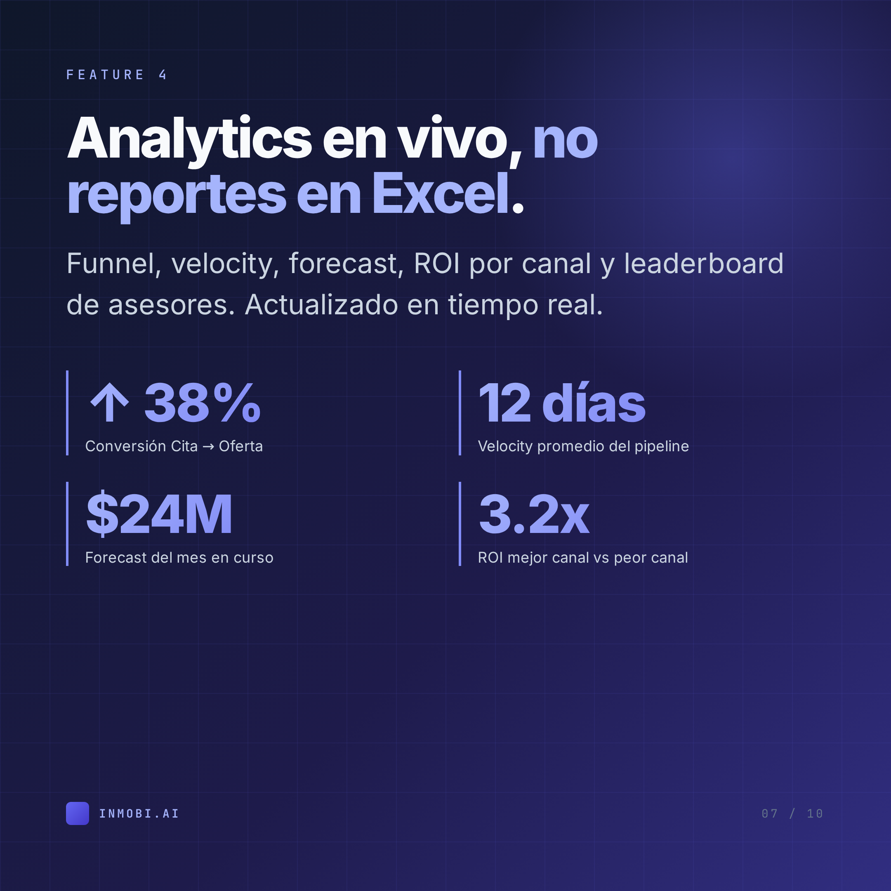
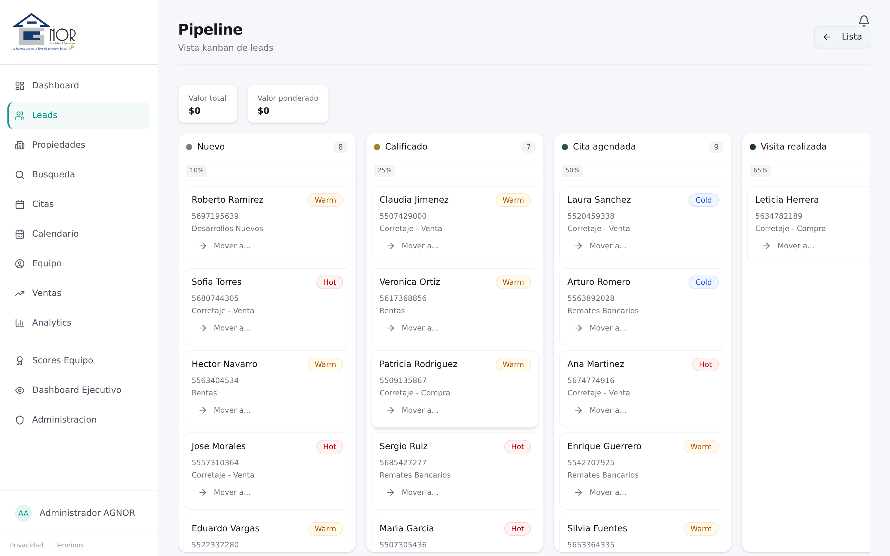
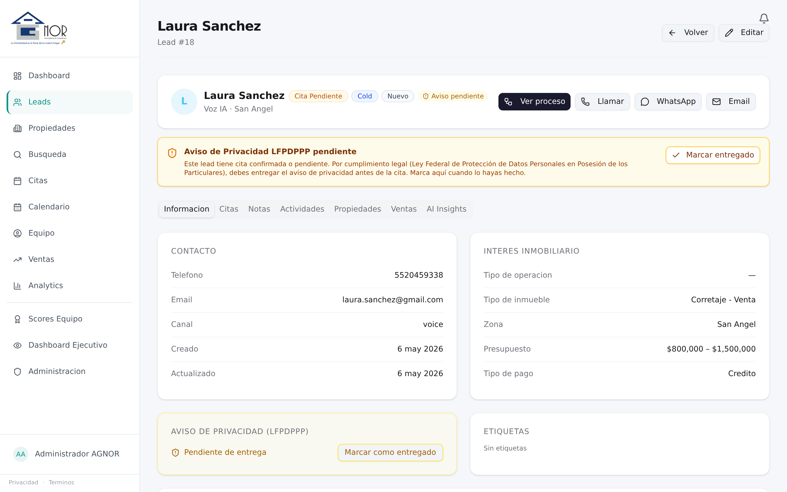
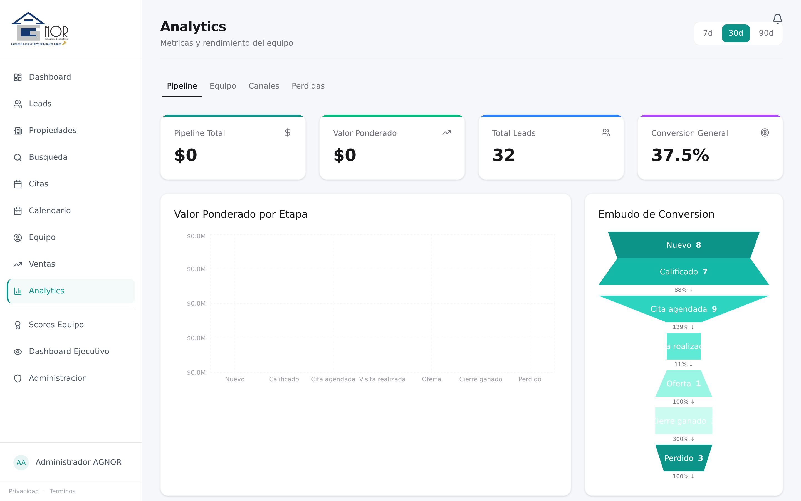

Captura + perfilado IA
Voz Retell + WhatsApp + web. Claude perfila en la primera interacción.
Innmobi.ai es un CRM construido desde cero para inmobiliarias mexicanas. Inteligencia que califica leads en la primera llamada, pipeline visual, WhatsApp Business nativo, integración con Mercado Libre. Tu pipeline merece más que una hoja de Excel.
Contesta a las once de la noche. Califica al lead en 90 segundos. Entrega un perfil estructurado al asesor antes de que cuelgue el teléfono.
Llamadas, WhatsApp, web, citas y notas — todo en un timeline cronológico por prospecto. Cero pestañas, cero "se me pasó".
No se diseñó en un Notion. Se construyó en piso, vendiendo remates bancarios, con feedback de los asesores que cierran.
Lo que pasa adentro del CRM, en bucle. Sin video, sin hosting. SVG animado puro.

El asesor mueve a Carlos Méndez de Calificado a Cita. La transición se registra sola en el timeline. El coordinador lo ve en vivo.

Llamada entrante → Claude perfila → asesor recibe el lead pre-trabajado por WhatsApp. 24/7, sin pausa.

Cita confirmada → recordatorio 1h antes → cliente confirma. Sin intervención manual del asesor.
No son mockups. Capturas reales del CRM corriendo con datos demo. Lo que ves abajo es exactamente la herramienta que vas a usar el primer día.

15 leads HOT que requieren atención hoy. Pipeline en pesos, conversión IA, leads sin contactar — en vivo.

Calificado · Cita · Visita · Oferta · Cierre. La transición se registra sola. El coordinador ve a 15 asesores a la vez.

Perfil + tabs (Citas, Notas, Actividades, AI Insights). Llamar, WhatsApp, Email a un click. Privacidad LFPDPPP integrada.

Embudo de conversión por etapa. Pipeline / Equipo / Canales / Pérdidas. Las cifras viven, no se calculan al lunes.
Voz Retell + WhatsApp + web. Claude perfila en la primera interacción.
Kanban drag-and-drop. La transición se registra en el timeline.
Cinco canales en un hilo cronológico, buscable, exportable.
21 plantillas Meta + free-form 24h + envío masivo segmentado.
Sync bidireccional. Conflictos detectados, recordatorios automáticos.
Funnel, velocity, forecast, ROI por canal, leaderboard.
Remates, preventa, corretaje, recuperadas, reventa, rentas.
Publica/despublica con un click. Auto-sync al editar.
Antes le dedicaba dos horas al lunes haciendo el reporte semanal en Excel. Ahora abro Analytics y todo está. Si un asesor está dejando enfriar leads, el sistema me avisa antes que el cliente reclame.
Cuando entra una llamada, mi celular ya tiene el contexto del cliente antes de que yo conteste. Eso cambió cómo vendo. Ya no llego a frío a una conversación.
Sin "rip and replace" caótico. Migración paralela con tu sistema actual hasta que confíes 100%.
Pricing por asesor activo, ajustado al tamaño de tu equipo y tu volumen de leads. No publicamos lista pública porque las inmobiliarias chicas pagan distinto que las que cierran 100M al año. Hablemos 30 minutos y te damos un número específico para tu caso.
Importadores nativos para los 3. Te ayudamos a exportar tu data, mapearla a la estructura de Innmobi.ai (leads, propiedades, asesores, citas), y validar que nada se pierda. La migración completa toma 4 semanas con tu equipo trabajando normal en paralelo.
Sí, pero te acompañamos en el alta con Meta (proceso de ~10 días que se hace una sola vez). Si ya tienes WhatsApp Business standard, te ayudamos a migrar al Business API sin perder tu número actual.
Sí. AGNOR Inmobiliaria ya opera bajo cumplimiento. El sistema incluye gestión de avisos de privacidad por lead, consentimiento explícito antes de cada cita, y export/borrado de data cuando un cliente lo solicita.
Integración nativa con la API de Mercado Libre Inmuebles. Publica con un click, sincroniza precio y status automáticamente, despublica al marcar como vendida. Las llamadas que entran por ML llegan al CRM ya etiquetadas con la fuente.
Es la regla, no la excepción. La UI fue diseñada con asesores no-técnicos en piso de AGNOR. La curva de aprendizaje es ~2 horas — y el agente de voz reduce la dependencia de que el asesor capture cosas manualmente.
Tú. Siempre. Export completo en formato CSV y JSON disponible en cualquier momento desde el panel de admin. Si decides irte, te exportamos toda la data y la borramos de nuestros servidores en menos de 30 días.
Español 100%, mexicano específicamente. UI, plantillas WhatsApp, agente de voz Claude, copy interno — todo escrito para CDMX. No es traducción, es producto nativo.
Mobile-first responsive. Tu asesor en campo abre el lead desde el celular, marca la cita, registra notas, manda WhatsApp — todo desde la misma URL del CRM, sin app aparte que instalar.
Cuatro semanas con onboarding completo (ver sección Migración arriba). Si necesitas algo más rápido, te subimos a la versión core en 5 días — sin integración WhatsApp ni ML — y agregamos lo demás después.
Domain-Driven Design con Unit of Work pattern. Webhook fail-closed. Tests contra PostgreSQL real (no SQLite mocks que mienten). Deploy blue/green con rollback automático.
Demo en vivo de 30 minutos. Trial de 14 días con tu data real importada. Sin tarjeta de crédito, sin compromiso. Si no te enamora, te exportamos tu data y nos vamos como amigos.